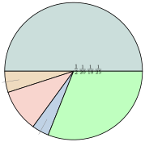

- កំណត់និយមន័យចំនួនសនិទាន
- ប្រៀបធៀបនិងរៀបលំដាប់ចំនួនសនិទាន
- ធ្វើប្រមាណវិធីទាំងបួន (បូក ដក គុណ និងចែក) លើចំនួនសនិទាន ។
1. សញ្ញាណចំនួនសនិទាន
បើគេដកពីរចំនួនគត់ ផលដកមិនមែនជាចំនួនគត់គ្រប់ករណីទេ ។
ឧទាហរណ៍ ៖ \(\displaystyle 7-4=3\) ប៉ុន្តែ \(\displaystyle 4-7=-3\), \(\displaystyle -3\) ជាចំនួនគត់រ៉ឺឡាទីប ។
បើគេចែកពីរចំនួនគត់រ៉ឺឡាទីប ផលចែកមិនមែនជាចំនួនគត់រ៉ឺឡាទីបគ្រប់ករណីទេ ។
ឧទាហរណ៍ ៖ \(\displaystyle 6\div3=2\) ប៉ុន្តែ \(\displaystyle 3\div6=\frac{3}{6}\), ផលចែក \(\displaystyle \frac{3}{6}\) ដែលមានទម្រង់ជាប្រភាគហៅថា ចំនួនសនិទាន ។
ចំនួនសនិទាន ជាចំនួនដែលមានទម្រង់ \(\displaystyle \frac{a}{b}\) ដែល \(\displaystyle a\) និង \(\displaystyle b\) ជាចំនួនគត់រ៉ឺឡាទីប ដែល \(\displaystyle b \ne 0\) ។
ចំនួនសនិទានដែលមានភាគបែងស្មើនឹង 1 អាចតាងដោយចំនួនគត់ ៖
ឧទាហរណ៍ ៖ \(\displaystyle \frac{5}{1}=5\) ។
ចំនួនសនិទានដែលមានភាគបែងស្មើនឹង 10, 100, … អាចតាងដោយចំនួនទសភាគ ៖
ឧទាហរណ៍ ៖ \(\displaystyle \frac{2}{10}=0.2\), \(\displaystyle \frac{-3}{100}=-0.03\) ។
ចំនួនសនិទានដែលមានភាគយកនិងភាគបែងជាចំនួនបឋមនឹងគ្នា អាចតាងដោយចំនួនទសភាគខួប ៖
ឧទាហរណ៍ ៖ \(\displaystyle \frac{4}{3}=1.\overline{3}\), \(\displaystyle \frac{1}{3}=0.\overline{3}\) ។
ចំនួនសនិទានដែលមានភាគយកធំជាងភាគបែង អាចតាងដោយចំនួនចម្រុះ ៖
ឧទាហរណ៍ ៖ \(\displaystyle \frac{7}{3}=2\frac{1}{3}\), \(\displaystyle \frac{-13}{4}=-3\frac{1}{4}\) ។
ដូច្នេះ ចំនួនសនិទានអាចមានទម្រង់ជា ចំនួនគត់ ចំនួនគត់រ៉ឺឡាទីប ចំនួនទសភាគ និងចំនួនចម្រុះ ។
ចំនួន \(\displaystyle -3, 0, 0.5, \frac{-2}{3}, 4\frac{1}{5}, 2.\overline{3}\) ជាចំនួនសនិទាន ។
ចំនួន \(\displaystyle \frac{5}{10}, \frac{4}{8}, \frac{3}{6}, \frac{1}{2}, 0.5\) ជាចំនួនសនិទានស្មើគ្នា គេសរសេរ ៖
គេសង្កេតឃើញថា ផលគុណខ្វែង \(\displaystyle 5\times8=10\times4\), \(\displaystyle 4\times6=8\times3\), \(\displaystyle 3\times2=6\times1\) ។
បើ \(\displaystyle \frac{a}{b}=\frac{c}{d}\) នោះគេបាន \(\displaystyle ad=bc\) ។
ក្នុងចំណោមចំនួនសនិទានខាងក្រោម ចូរផ្តុំចំនួនដែលស្មើគ្នា \(\displaystyle -3\frac{1}{2}, \frac{-14}{4}, -3.5, \frac{21}{6}\) ។
ដំណោះស្រាយ ៖ ដោយបំប្លែងទៅជាទម្រង់ប្រភាគសាមញ្ញ ឬទសភាគ ៖
ចំណែក \(\displaystyle \frac{21}{6} = \frac{7}{2} = 3.5\) (វិជ្ជមាន) ។ ដូចនេះ ក្រុមចំនួនដែលស្មើគ្នាគឺ \(\displaystyle -3\frac{1}{2} = \frac{-14}{4} = -3.5\) ។
កំណត់ \(\displaystyle x\) ដើម្បីឱ្យចំនួនសនិទាន \(\displaystyle \frac{45}{x}\) ស្មើនឹង \(\displaystyle 7\frac{1}{2}\) ។
ដំណោះស្រាយ ៖ ដោយ \(\displaystyle 7\frac{1}{2} = \frac{15}{2}\) នោះគេបាន ៖
ដូចនេះ \(\displaystyle x = 6\) ។
កំណត់ \(\displaystyle x, y\) ដើម្បីឱ្យចំនួនសនិទាន \(\displaystyle \frac{-2}{x}, \frac{y}{5}, -0.2\) មានតម្លៃស្មើគ្នា ។
ចម្លើយ ៖ បំប្លែង \(\displaystyle -0.2 = -\frac{2}{10} = -\frac{1}{5}\) ៖
- \(\displaystyle \frac{-2}{x} = -\frac{2}{10} \implies x = 10\)
- \(\displaystyle \frac{y}{5} = -\frac{1}{5} \implies y = -1\)
ដូចនេះ \(\displaystyle x = 10, y = -1\) ។
2. ការប្រៀបធៀបនិងរៀបលំដាប់នៃចំនួនសនិទាន
2.1. ការប្រៀបធៀបចំនួនសនិទាន
ឧទាហរណ៍ 1 ៖ ចំនួនសនិទាន \(\displaystyle -5\) តូចជាងចំនួនសនិទាន \(\displaystyle -1\) តាងដោយ \(\displaystyle -5 < -1\) ព្រោះនៅលើបន្ទាត់ចំនួន ចំនួនសនិទាន \(\displaystyle -1\) នៅខាងស្តាំនៃចំនួនសនិទាន \(\displaystyle -5\) ។
ចំនួនសនិទាន \(\displaystyle \frac{1}{4}\) តូចជាងចំនួនសនិទាន \(\displaystyle \frac{3}{4}\) តាងដោយ \(\displaystyle \frac{1}{4} < \frac{3}{4}\) ព្រោះ \(\displaystyle 1 < 3\) ។
ចំនួនសនិទាន \(\displaystyle \frac{-5}{7} > \frac{-3}{4}\) ព្រោះផលដក ៖
គេអាចរៀបលំដាប់នៃចំនួនសនិទានដូចខាងក្រោម៖
- \(\displaystyle \frac{a}{b} < \frac{c}{d}\) លុះត្រាតែ \(\displaystyle \frac{a}{b}\) ស្ថិតនៅខាងឆ្វេងនៃ \(\displaystyle \frac{c}{d}\) នៅលើបន្ទាត់នៃចំនួន
- \(\displaystyle \frac{a}{b} < \frac{c}{d}\) លុះត្រាតែ \(\displaystyle \frac{c}{d} - \frac{a}{b} > 0\)
- \(\displaystyle \frac{a}{b} < \frac{c}{b}\) លុះត្រាតែ \(\displaystyle a < c\) (កាលណា \(\displaystyle b > 0\)) ។
ឧទាហរណ៍ 2 ៖ ចំនួនសនិទាន \(\displaystyle \frac{6}{11}\) និង \(\displaystyle \frac{7}{12}\) មានផលគុណខ្វែង ៖
ចំពោះចំនួនសនិទាន \(\displaystyle \frac{a}{b}\) និង \(\displaystyle \frac{c}{d}\) ដែល \(\displaystyle b>0\) និង \(\displaystyle d>0\) ៖ បើ \(\displaystyle \frac{a}{b} < \frac{c}{d}\) នោះ \(\displaystyle ad < bc\) ។ ច្រាសមកវិញ បើ \(\displaystyle ad < bc\) នោះ \(\displaystyle \frac{a}{b} < \frac{c}{d}\) ។
2.2. ការរៀបលំដាប់ចំនួនសនិទាន
ឧទាហរណ៍ 1 ៖ លំដាប់ចំនួនសនិទាននៅលើបន្ទាត់ចំនួន ៖
ឧទាហរណ៍ 2 ៖ សរសេរចំនួនសនិទានខាងក្រោមពីតូចទៅធំ \(\displaystyle \frac{1}{8}, -\frac{9}{7}, -1, 0.28, 1\frac{2}{5}\) ៖
បំពេញចន្លោះដោយសញ្ញា (\(\displaystyle >, <, =\)) ចំពោះចំនួនខាងក្រោម៖
- ក. \(\displaystyle -6 \dots -3\)
- ខ. \(\displaystyle \frac{-2}{7} \dots \frac{-5}{7}\)
- គ. \(\displaystyle \frac{4}{3} \dots 1\frac{5}{7}\)
- ឃ. \(\displaystyle 0.45 \dots \frac{54}{100}\)
ដំណោះស្រាយ ៖
- ក. \(\displaystyle -6 < -3\) (ព្រោះ \(\displaystyle -6\) នៅខាងឆ្វេង \(\displaystyle -3\) លើបន្ទាត់ចំនួន)
- ខ. \(\displaystyle \frac{-2}{7} > \frac{-5}{7}\) (ព្រោះភាគបែងស្មើគ្នា \(\displaystyle 7>0\) ហើយ \(\displaystyle -2 > -5\))
- គ. \(\displaystyle \frac{4}{3} = \frac{28}{21}\) និង \(\displaystyle 1\frac{5}{7} = \frac{12}{7} = \frac{36}{21}\) នាំឱ្យ \(\displaystyle \frac{4}{3} < 1\frac{5}{7}\)
- ឃ. \(\displaystyle 0.45 = \frac{45}{100} < \frac{54}{100}\) ។
រៀបចំនួនសនិទានខាងក្រោមតាមលំដាប់ពីតូចទៅធំ ៖
- ក. \(\displaystyle \frac{4}{3}, 0.3, -0.25, \frac{5}{4}\)
- ខ. \(\displaystyle 1\frac{1}{3}, \frac{7}{3}, \frac{5}{4}, -1, \frac{-9}{4}\)
ដំណោះស្រាយ ៖
- ក. តម្រូវភាគបែងរួម 120 ៖ \(\displaystyle \frac{4}{3} = \frac{160}{120}\), \(\displaystyle 0.3 = \frac{36}{120}\), \(\displaystyle -0.25 = -\frac{30}{120}\), \(\displaystyle \frac{5}{4} = \frac{150}{120}\) ។ ដូចនេះ \(\displaystyle -0.25 < 0.3 < \frac{5}{4} < \frac{4}{3}\) ។
- ខ. តម្រូវភាគបែងរួម 12 ៖ \(\displaystyle 1\frac{1}{3} = \frac{16}{12}\), \(\displaystyle \frac{7}{3} = \frac{28}{12}\), \(\displaystyle \frac{5}{4} = \frac{15}{12}\), \(\displaystyle -1 = -\frac{12}{12}\), \(\displaystyle \frac{-9}{4} = -\frac{27}{12}\) ។ ដូចនេះ \(\displaystyle \frac{-9}{4} < -1 < \frac{5}{4} < 1\frac{1}{3} < \frac{7}{3}\) ។
- ក. រៀបចំនួនសនិទានតាមលំដាប់ពីធំទៅតូច \(\displaystyle \frac{3}{4}, \frac{7}{8}, \frac{4}{5}, 0.75\)
- ខ. សរសេរចំនួនសនិទាន \(\displaystyle \frac{9}{11}, \frac{7}{2^3\times5}\) ជាចំនួនទសភាគ
- គ. សរសេរចំនួនទសភាគខួប \(\displaystyle 0.\overline{4}, 1.\overline{285}, 0.8\overline{21}\) ទៅជាចំនួនសនិទាន ។
ចម្លើយ ៖
- ក. តម្រូវភាគបែងរួម \(\displaystyle 40\) ៖ \(\displaystyle \frac{7}{8} = 0.875 > \frac{4}{5} = 0.8 > \frac{3}{4} = 0.75 = 0.75\)
- ខ. \(\displaystyle \frac{9}{11} = 0.\overline{81}\), \(\displaystyle \frac{7}{2^3 \times 5} = \frac{7}{40} = 0.175\)
- គ. \(\displaystyle 0.\overline{4} = \frac{4}{9}\), \(\displaystyle 1.\overline{285} = 1 + \frac{285}{999} = \frac{1284}{999} = \frac{428}{333}\), \(\displaystyle 0.8\overline{21} = \frac{821-8}{990} = \frac{813}{990} = \frac{271}{330}\) ។
3. ប្រមាណវិធីបូកនិងដកនៃចំនួនសនិទាន
3.1. ប្រមាណវិធីបូក
ឧទាហរណ៍ ៖ គណនាផលបូក ៖
- ក. \(\displaystyle \frac{9}{5}+\frac{7}{5} = \frac{9+7}{5} = \frac{16}{5}\)
- ខ. \(\displaystyle 3.5+\frac{79}{10} = \frac{35}{10}+\frac{79}{10} = \frac{114}{10} = \frac{57}{5}\) ។
គេមាន \(\displaystyle \frac{a}{b}\) និង \(\displaystyle \frac{c}{d}\) ជាពីរចំនួនសនិទាន គេបាន ៖
សម្គាល់ ៖ បើភាគបែងដូចគ្នា ៖ \(\displaystyle \frac{a}{b} + \frac{c}{b} = \frac{a+c}{b}\) ។
គណនាផលបូក ៖
- ក. \(\displaystyle \frac{3}{7}+\frac{-5}{7}\)
- ខ. \(\displaystyle \frac{-3}{8}+\frac{5}{-8}\)
- គ. \(\displaystyle \frac{7}{8}+\frac{-7}{8}\)
- ឃ. \(\displaystyle \frac{-3}{5}+\frac{4}{-7}\)
ដំណោះស្រាយ ៖
- ក. \(\displaystyle \frac{3}{7}+\frac{-5}{7} = \frac{3-5}{7} = \frac{-2}{7}\)
- ខ. \(\displaystyle \frac{-3}{8}+\frac{5}{-8} = \frac{-3-5}{8} = \frac{-8}{8} = -1\)
- គ. \(\displaystyle \frac{7}{8}+\frac{-7}{8} = \frac{7-7}{8} = 0\)
- ឃ. \(\displaystyle \frac{-3}{5}+\frac{-4}{7} = \frac{-21-20}{35} = -\frac{41}{35}\) ។
គណនាផលបូក ៖
- ក. \(\displaystyle \left(-3\frac{3}{5}\right)+\left(3\frac{7}{4}\right)\)
- ខ. \(\displaystyle \left(\frac{-1}{4}\right)+\frac{5}{6}+\frac{7}{3}\)
- គ. \(\displaystyle 437.56+127.95\)
ដំណោះស្រាយ ៖
- ក. \(\displaystyle \left(-3\frac{3}{5}\right)+\left(3\frac{7}{4}\right) = -\frac{18}{5} + \frac{19}{4} = \frac{-72+95}{20} = \frac{23}{20}\)
- ខ. \(\displaystyle \left(\frac{-1}{4}\right)+\frac{5}{6}+\frac{7}{3} = \frac{-3+10+28}{12} = \frac{35}{12}\)
- គ. \(\displaystyle 437.56+127.95 = 565.51\) ។
គណនា ៖
- ក. \(\displaystyle \left(-\frac{21}{4}\right)+\left(-\frac{11}{4}\right)\)
- ខ. \(\displaystyle 2\frac{1}{4}+5\frac{1}{4}\)
- គ. \(\displaystyle 2\frac{5}{8}+\left(-1\frac{1}{8}\right)+3\frac{7}{8}\)
ចម្លើយ ៖
- ក. \(\displaystyle \frac{-21-11}{4} = \frac{-32}{4} = -8\)
- ខ. \(\displaystyle (2+5) + \frac{1+1}{4} = 7 + \frac{2}{4} = 7\frac{1}{2}\)
- គ. \(\displaystyle \frac{21}{8} - \frac{9}{8} + \frac{31}{8} = \frac{43}{8} = 5\frac{3}{8}\) ។
ចំពោះចំនួនសនិទាន \(\displaystyle \frac{a}{b}, \frac{c}{d}, \frac{e}{f}\) ៖
- \(\displaystyle \frac{a}{b}+\frac{c}{d} = \frac{c}{d}+\frac{a}{b}\) (លក្ខណៈត្រឡប់)
- \(\displaystyle \left(\frac{a}{b}+\frac{c}{d}\right)+\frac{e}{f} = \frac{a}{b}+\left(\frac{c}{d}+\frac{e}{f}\right)\) (លក្ខណៈផ្តុំ)
- \(\displaystyle \frac{a}{b}+0 = 0+\frac{a}{b} = \frac{a}{b}\)
- \(\displaystyle \frac{a}{b}+\left(-\frac{a}{b}\right) = 0\) (\(\displaystyle -\frac{a}{b}\) ជាចំនួនផ្ទុយនៃ \(\displaystyle \frac{a}{b}\)) ។
គណនាផលបូកខាងក្រោមដោយប្រើលក្ខណៈផ្តុំ ៖
- ក. \(\displaystyle \left(\frac{5}{6}+\frac{7}{3}\right)+\frac{5}{3}\)
- ខ. \(\displaystyle \left(\frac{5}{7}+\frac{3}{8}\right)+\left(\frac{17}{8}+\frac{-5}{7}\right)\)
ដំណោះស្រាយ ៖
- ក. \(\displaystyle \frac{5}{6}+\left(\frac{7}{3}+\frac{5}{3}\right) = \frac{5}{6}+4 = \frac{5+24}{6} = \frac{29}{6}\)
- ខ. \(\displaystyle \left(\frac{5}{7}+\frac{-5}{7}\right)+\left(\frac{3}{8}+\frac{17}{8}\right) = 0 + \frac{20}{8} = \frac{5}{2}\) ។
3.2. ប្រមាណវិធីដកនៃចំនួនសនិទាន
ឧទាហរណ៍ ៖ គណនាផលដក ៖
- ក. \(\displaystyle \frac{9}{10}-\frac{7}{10} = \frac{9-7}{10} = \frac{2}{10} = \frac{1}{5}\)
- ខ. \(\displaystyle \frac{5}{4}-\frac{7}{8} = \frac{10-7}{8} = \frac{3}{8}\)
- គ. \(\displaystyle -\frac{5}{6}-\left(-\frac{7}{3}\right) = \frac{-5+14}{6} = \frac{9}{6} = \frac{3}{2}\) ។
គេមាន \(\displaystyle \frac{a}{b}\) និង \(\displaystyle \frac{c}{d}\) ជាពីរចំនួនសនិទាន ៖
សម្គាល់ ៖ \(\displaystyle \frac{a}{b}-\frac{c}{b} = \frac{a-c}{b}\) ។
គណនាផលដក \(\displaystyle \frac{3}{5}-\frac{7}{10} = \frac{6-7}{10} = -\frac{1}{10}\) ។
ក្នុងសិក្ខាសាលាមួយមានការចូលរួមពីតន្ត្រីករ \(\displaystyle \frac{1}{4}\) សិល្បករ \(\displaystyle \frac{2}{5}\) អ្នករបាំ \(\displaystyle \frac{1}{10}\) និងអ្នកដែលនៅសល់ជាអ្នកនិពន្ធ ។ តើប្រភាគតាងអ្នកនិពន្ធស្មើប៉ុន្មាន?
ដំណោះស្រាយ ៖ ប្រភាគតាងតន្ត្រីករ សិល្បករ និងអ្នករបាំសរុប ៖
ប្រភាគតាងអ្នកនិពន្ធគឺ ៖ \(\displaystyle 1 - \frac{3}{4} = \frac{1}{4}\) ។
គណនា ៖
- ក. \(\displaystyle -\frac{5}{24}-\frac{7}{30}\)
- ខ. \(\displaystyle \frac{1}{15}-\frac{27}{50}\)
ចម្លើយ ៖
- ក. \(\displaystyle \text{LCM}(24, 30) = 120 \implies \frac{-25 - 28}{120} = -\frac{53}{120}\)
- ខ. \(\displaystyle \text{LCM}(15, 50) = 150 \implies \frac{10 - 81}{150} = -\frac{71}{150}\) ។
4. ប្រមាណវិធីគុណនៃចំនួនសនិទាន
ឧទាហរណ៍ ៖ គណនាផលគុណ ៖
- ក. \(\displaystyle \frac{3}{8}\times3.8 = \frac{3}{8}\times\frac{38}{10} = \frac{114}{80} = \frac{57}{40}\)
- ខ. \(\displaystyle \left(-\frac{2}{3}\right)\left(-\frac{7}{15}\right) = \frac{(-2)(-7)}{3\times15} = \frac{14}{45}\) ។
គេមាន \(\displaystyle \frac{a}{b}\) និង \(\displaystyle \frac{c}{d}\) ជាពីរចំនួនសនិទាន គេបាន ៖
សម្គាល់ ៖
- ផលគុណនៃពីរចំនួនសនិទានដែលមានសញ្ញាដូចគ្នា ជាចំនួនវិជ្ជមាន ។
- ផលគុណនៃពីរចំនួនសនិទានដែលមានសញ្ញាផ្ទុយគ្នា ជាចំនួនអវិជ្ជមាន ។
ចំពោះចំនួនសនិទាន \(\displaystyle \frac{a}{b}, \frac{c}{d}, \frac{e}{f}\) ៖
- \(\displaystyle \frac{a}{b} \cdot \frac{c}{d} = \frac{c}{d} \cdot \frac{a}{b}\) (លក្ខណៈត្រឡប់)
- \(\displaystyle \left(\frac{a}{b}\cdot\frac{c}{d}\right)\cdot\frac{e}{f} = \frac{a}{b}\cdot\left(\frac{c}{d}\cdot\frac{e}{f}\right)\) (លក្ខណៈផ្តុំ)
- \(\displaystyle \frac{a}{b} \cdot 1 = 1 \cdot \frac{a}{b} = \frac{a}{b}\)
- \(\displaystyle \frac{a}{b} \cdot \frac{b}{a} = 1\) (\(\displaystyle a \ne 0, b \ne 0\)) (\(\displaystyle \frac{b}{a}\) ជាចំនួនច្រាសនៃ \(\displaystyle \frac{a}{b}\))
- \(\displaystyle \frac{a}{b}\cdot\left(\frac{c}{d}+\frac{e}{f}\right) = \frac{a}{b}\cdot\frac{c}{d} + \frac{a}{b}\cdot\frac{e}{f}\) (លក្ខណៈបំបែកនៃវិធីគុណចំពោះវិធីបូក) ។
គណនាផលគុណដោយប្រើលក្ខណៈ ៖
- ក. \(\displaystyle \frac{7}{5}\cdot\frac{9}{4}+\frac{7}{5}\cdot\frac{11}{4} = \frac{7}{5}\left(\frac{9+11}{4}\right) = \frac{7}{5} \times 5 = 7\)
- ខ. \(\displaystyle \frac{4}{5}\cdot\frac{9}{4}-\frac{7}{8}\cdot\frac{4}{5} = \frac{4}{5}\left(\frac{18-7}{8}\right) = \frac{4}{5} \cdot \frac{11}{8} = \frac{11}{10}\) ។
គណនាផលគុណ ៖
- ក. \(\displaystyle 0.75\times\frac{13}{125} = \frac{3}{4}\times\frac{13}{125} = \frac{39}{500}\)
- ខ. \(\displaystyle 5\frac{3}{4}\times\frac{12}{125} = \frac{23}{4}\times\frac{12}{125} = \frac{69}{125}\)
- គ. \(\displaystyle \left(-\frac{1}{3}\right)\left(\frac{3}{5}\right)(0.5)(0.2) = -\frac{1}{5} \times 0.1 = -\frac{1}{50}\) ។
5. ប្រមាណវិធីចែកនៃចំនួនសនិទាន
ឧទាហរណ៍ ៖ គណនាផលចែក ៖
- ក. \(\displaystyle \frac{4}{5}\div\frac{1}{10} = \frac{4}{5}\times\frac{10}{1} = \frac{40}{5} = 8\)
- ខ. \(\displaystyle -\frac{3}{5}\div2\frac{3}{10} = -\frac{3}{5}\div\frac{23}{10} = -\frac{3}{5}\times\frac{10}{23} = -\frac{6}{23}\) ។
គេមាន \(\displaystyle \frac{a}{b}\) និង \(\displaystyle \frac{c}{d}\) ជាពីរចំនួនសនិទានដែល \(\displaystyle b\ne0, c\ne0, d\ne0\) ៖
គណនាផលចែក ៖
- ក. \(\displaystyle \frac{24}{-25}\div\frac{6}{15} = \frac{24}{-25}\times\frac{15}{6} = \frac{4\times3}{-5} = -\frac{12}{5}\)
- ខ. \(\displaystyle \frac{28}{27}\div\frac{-4}{51} = \frac{28}{27}\times\frac{51}{-4} = \frac{7\times17}{-9} = -\frac{119}{9}\)
- គ. \(\displaystyle \frac{-18}{65}\div\frac{-6}{25} = \frac{-18}{65}\times\frac{25}{-6} = \frac{3\times5}{13} = \frac{15}{13}\) ។
គណនាផលចែក ៖
- ក. \(\displaystyle \frac{8}{3}\div\frac{-6}{5} = \frac{8}{3}\times\frac{5}{-6} = -\frac{20}{9} = -2\frac{2}{9}\)
- ខ. \(\displaystyle \frac{40}{-27}\div\frac{-10}{9} = \frac{40}{27}\times\frac{9}{10} = \frac{4}{3} = 1\frac{1}{3}\)
- គ. \(\displaystyle 154.63\div4.7 = 32.9\) ។
6. ចំណោទ
ចតុកោណកែងមួយមានបរិមាត្រ \(\displaystyle 16.38\text{ cm}\) ។
- ក. រកកន្លះបរិមាត្រនៃចតុកោណកែងនោះ ។
- ខ. បើជ្រុងមួយនៃចតុកោណកែងស្មើនឹង \(\displaystyle 3.26\text{ cm}\) ។ រកប្រវែងជ្រុងមួយទៀត ។
- គ. គណនាផ្ទៃក្រឡានៃចតុកោណកែង ។
ដំណោះស្រាយ ៖
- ក. កន្លះបរិមាត្រ \(\displaystyle P = 16.38 \div 2 = 8.19\text{ cm}\) ។
- ខ. តាង \(\displaystyle x\) ជាប្រវែងជ្រុងមួយទៀត ៖ \(\displaystyle x + 3.26 = 8.19 \implies x = 8.19 - 3.26 = 4.93\text{ cm}\) ។
- គ. ផ្ទៃក្រឡាចតុកោណកែង ៖ \(\displaystyle \mathcal{A} = 3.26 \times 4.93 = 16.0718\text{ cm}^2\) ។
លំហាត់
ក្នុងចំណោមចំនួនខាងក្រោម តើចំនួនណាខ្លះដែលស្មើនឹង \(\displaystyle -5\) ?
\[\frac{-5}{1}, \quad \frac{5}{-1}, \quad \frac{5}{1}, \quad \frac{-5}{-1}, \quad -\frac{-5}{1}, \quad -\frac{-5}{-1}\]មើលដំណោះស្រាយ
គណនាតម្លៃនៃកន្សោមនីមួយៗ ៖
- \(\displaystyle \frac{-5}{1} = -5\)
- \(\displaystyle \frac{5}{-1} = -5\)
- \(\displaystyle \frac{5}{1} = 5\)
- \(\displaystyle \frac{-5}{-1} = 5\)
- \(\displaystyle -\frac{-5}{1} = -(-5) = 5\)
- \(\displaystyle -\frac{-5}{-1} = -(5) = -5\)
ដូចនេះ ចំនួនដែលស្មើនឹង \(\displaystyle -5\) គឺ ៖ \(\displaystyle \frac{-5}{1}, \frac{5}{-1}\) និង \(\displaystyle -\frac{-5}{-1}\) ។
សរសេរចំនួនខាងក្រោមជាចំនួនទសភាគ ៖
- ក. \(\displaystyle (2\times10)+4+(2\times0.1)+(8\times0.01)\)
- ខ. \(\displaystyle (4\times100)+4+(2\times0.01)+(8\times0.0001)\)
- គ. \(\displaystyle (8\times1000)+(2\times10)+(8\times0.001)\)
- ឃ. \(\displaystyle (7\times100)+(6\times10)+4+(2\times0.1)+(7\times0.01)\)
- ង. \(\displaystyle 5(100)+4(10)+8+6\left(\frac{1}{10}\right)+9\left(\frac{1}{100}\right)+3\left(\frac{1}{1000}\right)\)
មើលដំណោះស្រាយ
- ក. \(\displaystyle 20 + 4 + 0.2 + 0.08 = 24.28\)
- ខ. \(\displaystyle 400 + 4 + 0.02 + 0.0008 = 404.0208\)
- គ. \(\displaystyle 8000 + 20 + 0.008 = 8020.008\)
- ឃ. \(\displaystyle 700 + 60 + 4 + 0.2 + 0.07 = 764.27\)
- ង. \(\displaystyle 500 + 40 + 8 + 0.6 + 0.09 + 0.003 = 548.693\) ។
សរសេរចំនួនខាងក្រោមជាប្រភាគ ៖
- ក. \(\displaystyle 28.45\)
- ខ. \(\displaystyle 1.378\)
- គ. \(\displaystyle 1.38\)
- ឃ. \(\displaystyle 0.13\)
- ង. \(\displaystyle 0.347\)
មើលដំណោះស្រាយ
- ក. \(\displaystyle 28.45 = \frac{2845}{100} = \frac{569}{20} = 28\frac{9}{20}\)
- ខ. \(\displaystyle 1.378 = \frac{1378}{1000} = \frac{689}{500} = 1\frac{189}{500}\)
- គ. \(\displaystyle 1.38 = \frac{138}{100} = \frac{69}{50} = 1\frac{19}{50}\)
- ឃ. \(\displaystyle 0.13 = \frac{13}{100}\) (បើជាទសភាគខួប \(\displaystyle 0.\overline{13} = \frac{13}{99}\))
- ង. \(\displaystyle 0.347 = \frac{347}{1000}\) (បើជាទសភាគខួប \(\displaystyle 0.3\overline{47} = \frac{347-3}{990} = \frac{344}{990} = \frac{172}{495}\)) ។
សរសេរចំនួនសនិទានខាងក្រោមជាចំនួនទសភាគ ៖
- ក. \(\displaystyle \frac{7}{100}\)
- ខ. \(\displaystyle \frac{13}{10~000}\)
- គ. \(\displaystyle \frac{3}{2^4}\)
- ឃ. \(\displaystyle \frac{7}{2^3\cdot5}\)
- ង. \(\displaystyle \frac{17}{625}\)
មើលដំណោះស្រាយ
- ក. \(\displaystyle \frac{7}{100} = 0.07\)
- ខ. \(\displaystyle \frac{13}{10~000} = 0.0013\)
- គ. \(\displaystyle \frac{3}{2^4} = \frac{3}{16} = \frac{3 \times 625}{16 \times 625} = \frac{1875}{10\,000} = 0.1875\)
- ឃ. \(\displaystyle \frac{7}{2^3 \cdot 5} = \frac{7}{40} = \frac{7 \times 25}{40 \times 25} = \frac{175}{1000} = 0.175\)
- ង. \(\displaystyle \frac{17}{625} = \frac{17 \times 16}{625 \times 16} = \frac{272}{10\,000} = 0.0272\) ។
បំពេញក្នុង \(\displaystyle \square\) ដោយសញ្ញា \(\displaystyle <\) ឬ \(\displaystyle >\) ឱ្យបានត្រឹមត្រូវ ៖
- ក. \(\displaystyle -21 \mathbin{\square} -3\)
- ខ. \(\displaystyle \frac{7}{12} \mathbin{\square} \frac{7}{13}\)
- គ. \(\displaystyle 0.54 \mathbin{\square} 0.5398\)
- ឃ. \(\displaystyle 1\frac{10}{12} \mathbin{\square} 2\frac{7}{13}\)
- ង. \(\displaystyle -1\frac{10}{12} \mathbin{\square} -1\frac{9}{13}\)
មើលដំណោះស្រាយ
- ក. \(\displaystyle -21 < -3\) (ព្រោះនៅលើបន្ទាត់ចំនួន \(\displaystyle -21\) នៅខាងឆ្វេងនៃ \(\displaystyle -3\))
- ខ. \(\displaystyle \frac{7}{12} > \frac{7}{13}\) (ភាគយកដូចគ្នា \(\displaystyle 7>0\) និង \(\displaystyle 12 < 13\))
- គ. \(\displaystyle 0.54 > 0.5398\) (ព្រោះ \(\displaystyle 0.5400 > 0.5398\))
- ឃ. \(\displaystyle 1\frac{10}{12} < 2\frac{7}{13}\) (ព្រោះផ្នែកគត់ \(\displaystyle 1 < 2\))
- ង. \(\displaystyle -1\frac{10}{12} < -1\frac{9}{13}\) (ព្រោះ \(\displaystyle 1\frac{10}{12} = \frac{22}{12} \approx 1.833\) ធំជាង \(\displaystyle 1\frac{9}{13} = \frac{22}{13} \approx 1.692\) នាំឱ្យតម្លៃអវិជ្ជមានតូចជាង) ។
តម្រៀបចំនួនសនិទាន \(\displaystyle \frac{3}{4}, \frac{5}{6}, \frac{8}{9}\) តាមលំដាប់កើន ។
មើលដំណោះស្រាយ
រកភាគបែងរួមតូចបំផុតនៃ \(\displaystyle 4, 6, 9\) គឺ \(\displaystyle 36\) ៖
\[\frac{3}{4} = \frac{3 \times 9}{36} = \frac{27}{36}, \quad \frac{5}{6} = \frac{5 \times 6}{36} = \frac{30}{36}, \quad \frac{8}{9} = \frac{8 \times 4}{36} = \frac{32}{36}\]ដោយ \(\displaystyle 27 < 30 < 32\) នោះលំដាប់កើនគឺ ៖
\[\frac{3}{4} < \frac{5}{6} < \frac{8}{9}\]តម្រៀបចំនួនសនិទាន \(\displaystyle \frac{2}{5}, \frac{3}{8}, \frac{1}{3}\) តាមលំដាប់ចុះ ។
មើលដំណោះស្រាយ
រកភាគបែងរួមតូចបំផុតនៃ \(\displaystyle 5, 8, 3\) គឺ \(\displaystyle 120\) ៖
\[\frac{2}{5} = \frac{2 \times 24}{120} = \frac{48}{120}, \quad \frac{3}{8} = \frac{3 \times 15}{120} = \frac{45}{120}, \quad \frac{1}{3} = \frac{1 \times 40}{120} = \frac{40}{120}\]ដោយ \(\displaystyle 48 > 45 > 40\) នោះលំដាប់ចុះគឺ ៖
\[\frac{2}{5} > \frac{3}{8} > \frac{1}{3}\]- ក. តើចំនួនសនិទាន \(\displaystyle \frac{2}{5}, \frac{1}{2}, \frac{4}{9}\) មួយណាដែលធំជាងគេ?
- ខ. តើចំនួនសនិទាន \(\displaystyle \frac{5}{6}, \frac{3}{5}, \frac{2}{9}\) មួយណាដែលតូចជាងគេ ?
មើលដំណោះស្រាយ
- ក. តម្រូវភាគបែងរួម 90 ៖ \(\displaystyle \frac{2}{5} = \frac{36}{90}, \quad \frac{1}{2} = \frac{45}{90}, \quad \frac{4}{9} = \frac{40}{90}\) ដោយ \(\displaystyle 45 > 40 > 36\) ដូចនេះ \(\displaystyle \frac{1}{2}\) ធំជាងគេ ។
- ខ. តម្រូវភាគបែងរួម 90 ៖ \(\displaystyle \frac{5}{6} = \frac{75}{90}, \quad \frac{3}{5} = \frac{54}{90}, \quad \frac{2}{9} = \frac{20}{90}\) ដោយ \(\displaystyle 20 < 54 < 75\) ដូចនេះ \(\displaystyle \frac{2}{9}\) តូចជាងគេ ។
គណនា រួចសម្រួល ៖
- ក. \(\displaystyle \left(-\frac{1}{8}\right)+\left(2\frac{5}{9}\right)\)
- ខ. \(\displaystyle \left(\frac{12}{25}\right)+\left(-2\frac{5}{7}\right)\)
- គ. \(\displaystyle \left(-3\frac{1}{8}\right)-\left(-2\frac{5}{9}\right)\)
- ឃ. \(\displaystyle \left(\frac{1}{2}-\frac{1}{3}\right)\div\frac{5}{8}\)
- ង. \(\displaystyle \left(\frac{1}{2}+\frac{1}{3}\right)\div\left(\frac{5}{8}-\frac{1}{4}\right)\)
- ច. \(\displaystyle \frac{3\frac{2}{5}-\frac{25}{8}}{\frac{7}{12}+5\frac{4}{9}}\)
- ឆ. \(\displaystyle \frac{3\frac{25}{8}+2\frac{3}{8}}{2\frac{1}{5}-\left(-\frac{7}{9}\right)}+2\)
មើលដំណោះស្រាយ
- ក. \(\displaystyle -\frac{1}{8} + \frac{23}{9} = \frac{-9 + 184}{72} = \frac{175}{72} = 2\frac{31}{72}\)
- ខ. \(\displaystyle \frac{12}{25} - \frac{19}{7} = \frac{84 - 475}{175} = -\frac{391}{175} = -2\frac{41}{175}\)
- គ. \(\displaystyle -\frac{25}{8} + \frac{23}{9} = \frac{-225 + 184}{72} = -\frac{41}{72}\)
- ឃ. \(\displaystyle \left(\frac{3-2}{6}\right) \div \frac{5}{8} = \frac{1}{6} \times \frac{8}{5} = \frac{8}{30} = \frac{4}{15}\)
- ង. \(\displaystyle \left(\frac{3+2}{6}\right) \div \left(\frac{5-2}{8}\right) = \frac{5}{6} \div \frac{3}{8} = \frac{5}{6} \times \frac{8}{3} = \frac{40}{18} = \frac{20}{9} = 2\frac{2}{9}\)
- ច. ភាគយក ៖ \(\displaystyle \frac{17}{5} - \frac{25}{8} = \frac{136 - 125}{40} = \frac{11}{40}\)
ភាគបែង ៖ \(\displaystyle \frac{7}{12} + \frac{49}{9} = \frac{21 + 196}{36} = \frac{217}{36}\)
កន្សោម ៖ \(\displaystyle \frac{11}{40} \times \frac{36}{217} = \frac{11 \times 9}{10 \times 217} = \frac{99}{2170}\) - ឆ. ភាគយក ៖ \(\displaystyle \frac{49}{8} + \frac{19}{8} = \frac{68}{8} = \frac{17}{2}\)
ភាគបែង ៖ \(\displaystyle \frac{11}{5} + \frac{7}{9} = \frac{99 + 35}{45} = \frac{134}{45}\)
កន្សោម ៖ \(\displaystyle \frac{17}{2} \times \frac{45}{134} + 2 = \frac{765}{268} + \frac{536}{268} = \frac{1301}{268} = 4\frac{229}{268}\) ។
គណនា ៖
- ក. \(\displaystyle -\frac{4}{5}\cdot\left(\frac{11}{17}\cdot\frac{10}{16}\right)\)
- ខ. \(\displaystyle -\left(\frac{11}{13}\cdot\frac{17}{16}\right)\cdot\frac{26}{51}\)
- គ. \(\displaystyle \left(-\frac{11}{13}+\frac{17}{16}\right)\cdot\frac{26}{22}\)
- ឃ. \(\displaystyle -\frac{11}{8}\cdot\frac{21}{22}+\frac{17}{16}\cdot\frac{21}{22}\)
- ង. \(\displaystyle -\frac{11}{8}+\frac{21}{4}-\frac{17}{16}\)
- ច. \(\displaystyle \left(-\frac{11}{21}\right)\cdot\frac{3}{7}+\left(\frac{-3}{7}\right)\cdot\left(-\frac{11}{21}\right)\)
មើលដំណោះស្រាយ
- ក. \(\displaystyle -\frac{4}{5}\cdot\left(\frac{10}{16}\cdot\frac{11}{17}\right) = \left(-\frac{4}{5} \times \frac{5}{8}\right) \times \frac{11}{17} = -\frac{1}{2} \times \frac{11}{17} = -\frac{11}{34}\)
- ខ. \(\displaystyle -\frac{11}{16} \cdot \left(\frac{17}{13} \times \frac{26}{51}\right) = -\frac{11}{16} \cdot \left(\frac{17}{51} \times \frac{26}{13}\right) = -\frac{11}{16} \times \left(\frac{1}{3} \times 2\right) = -\frac{11}{16} \times \frac{2}{3} = -\frac{11}{24}\)
- គ. \(\displaystyle \left(-\frac{11}{13} \times \frac{26}{22}\right) + \left(\frac{17}{16} \times \frac{26}{22}\right) = \left(-\frac{1}{1} \times \frac{2}{2}\right) + \left(\frac{17 \times 13}{16 \times 11}\right) = -1 + \frac{221}{176} = \frac{45}{176}\)
- ឃ. \(\displaystyle \frac{21}{22}\left(-\frac{11}{8} + \frac{17}{16}\right) = \frac{21}{22}\left(-\frac{22}{16} + \frac{17}{16}\right) = \frac{21}{22}\left(-\frac{5}{16}\right) = -\frac{105}{352}\)
- ង. \(\displaystyle \frac{-22 + 84 - 17}{16} = \frac{45}{16} = 2\frac{13}{16}\)
- ច. \(\displaystyle -\frac{33}{147} + \frac{33}{147} = 0\) ។
បង្ហាញថា \(\displaystyle \frac{13}{4}+\frac{13}{9}=\frac{13}{4}\times\frac{13}{9}\) ។
មើលដំណោះស្រាយ
ពិនិត្យអង្គខាងឆ្វេង ៖
\[\frac{13}{4}+\frac{13}{9} = \frac{13 \times 9 + 13 \times 4}{4 \times 9} = \frac{13(9+4)}{36} = \frac{13 \times 13}{36} = \frac{169}{36}\]ពិនិត្យអង្គខាងស្ដាំ ៖
\[\frac{13}{4}\times\frac{13}{9} = \frac{13 \times 13}{4 \times 9} = \frac{169}{36}\]ដោយអង្គទាំងពីរស្មើគ្នា \(\displaystyle \frac{169}{36} = \frac{169}{36}\) ដូចនេះ \(\displaystyle \frac{13}{4}+\frac{13}{9}=\frac{13}{4}\times\frac{13}{9}\) ពិត ។
គេមាន \(\displaystyle \frac{a}{b}\left(\frac{c}{d}-\frac{e}{f}\right)=\frac{a}{b}\left[\frac{c}{d}+\left(-\frac{e}{f}\right)\right]\) ។ បង្ហាញថា \(\displaystyle \frac{a}{b}\left(\frac{c}{d}-\frac{e}{f}\right)=\frac{ac}{bd}-\frac{ae}{bf}\) ។
មើលដំណោះស្រាយ
តាមលក្ខណៈបំបែកនៃវិធីគុណចំពោះវិធីបូក ៖
\[\frac{a}{b}\left[\frac{c}{d}+\left(-\frac{e}{f}\right)\right] = \frac{a}{b}\cdot\frac{c}{d} + \frac{a}{b}\cdot\left(-\frac{e}{f}\right) = \frac{ac}{bd} + \left(-\frac{ae}{bf}\right) = \frac{ac}{bd} - \frac{ae}{bf}\]ដូចនេះ សមភាព \(\displaystyle \frac{a}{b}\left(\frac{c}{d}-\frac{e}{f}\right)=\frac{ac}{bd}-\frac{ae}{bf}\) ពិត ។
ផ្ទៀងផ្ទាត់ថា បើ \(\displaystyle \frac{a}{b}<\frac{c}{d}\) នោះ \(\displaystyle \frac{a}{b}+\frac{e}{f}<\frac{c}{d}+\frac{e}{f}\) ។
មើលដំណោះស្រាយ
ពិនិត្យផលដកនៃអង្គទាំងពីរ ៖
\[\left(\frac{c}{d}+\frac{e}{f}\right) - \left(\frac{a}{b}+\frac{e}{f}\right) = \frac{c}{d} + \frac{e}{f} - \frac{a}{b} - \frac{e}{f} = \frac{c}{d} - \frac{a}{b}\]ដោយ \(\displaystyle \frac{a}{b} < \frac{c}{d}\) នោះ \(\displaystyle \frac{c}{d} - \frac{a}{b} > 0\) នាំឱ្យ ៖
\[\left(\frac{c}{d}+\frac{e}{f}\right) - \left(\frac{a}{b}+\frac{e}{f}\right) > 0 \implies \frac{a}{b}+\frac{e}{f} < \frac{c}{d}+\frac{e}{f}\]ដូចនេះ វិសមភាពពិត ។
រូបខាងក្រោមនេះបង្ហាញពីបំណែងចែកនៃប្រាក់ប្រចាំខែ ។ រកប្រភាគដែលតាងឱ្យប្រាក់សន្សំ ។

មើលដំណោះស្រាយ
បូកប្រភាគចំណាយទាំងអស់ ៖
\[S_{\text{ចំណាយ}} = \frac{1}{2} + \frac{1}{20} + \frac{1}{10} + \frac{1}{25}\]ភាគបែងរួមតូចបំផុតនៃ \(\displaystyle 2, 20, 10, 25\) គឺ \(\displaystyle 100\) ៖
\[S_{\text{ចំណាយ}} = \frac{50}{100} + \frac{5}{100} + \frac{10}{100} + \frac{4}{100} = \frac{50+5+10+4}{100} = \frac{69}{100}\]ប្រាក់ចំណូលសរុបតាងដោយ \(\displaystyle 1 = \frac{100}{100}\) ៖
\[\text{ប្រភាគតាងប្រាក់សន្សំ} = 1 - \frac{69}{100} = \frac{31}{100}\]ដូចនេះ ប្រភាគដែលតាងឱ្យប្រាក់សន្សំគឺ \(\displaystyle \frac{31}{100}\) (ឬ \(\displaystyle 31\%\)) ។
ខ្លឹមសារ៖ សៀវភៅពុម្ពគណិតវិទ្យាថ្នាក់ទី៨ របស់ក្រសួងអប់រំ យុវជន និងកីឡា · វាយអត្ថបទ គូររូបភាពឡើងវិញ និងរៀបចំលើអនឡាញដោយលោកគ្រូ សាន សុខលី សម្រាប់ការសិក្សាដោយឥតគិតថ្លៃ និងមិនរកប្រាក់ចំណេញ។ មិនមែនជាការបោះពុម្ពផ្លូវការរបស់ក្រសួងទេ។